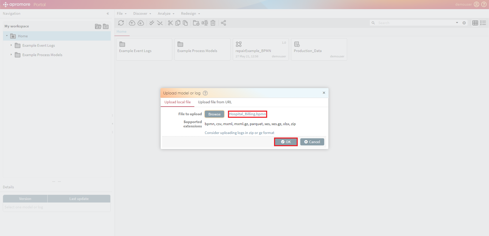
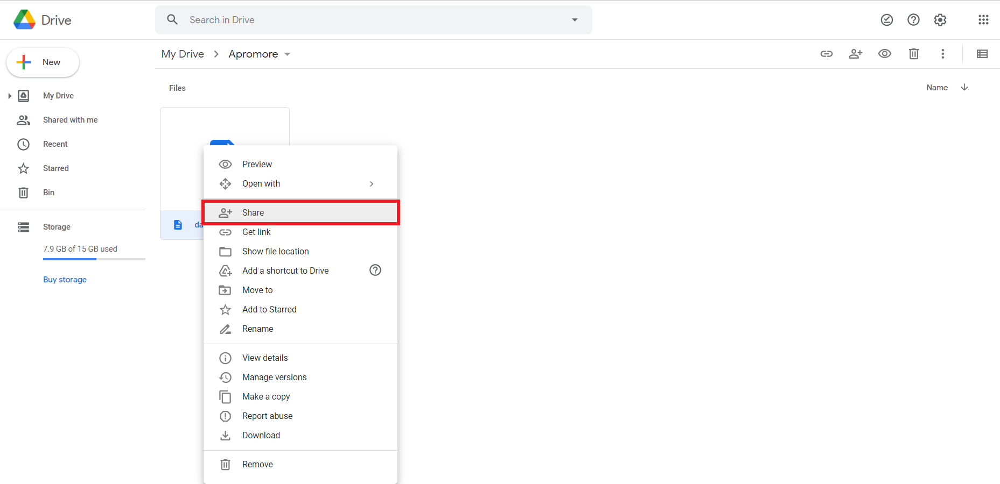

Upload a file¶
We can upload both process models in BPMN and event logs in CSV, XES, MXML, XLSX, and Parquet formats.
We can do it through two options – Upload Local File and Upload File from a URL.
Note
The plugin supports the following delimiters: Tab, Semicolon, Comma, and Spaces. However, the plugin supports comma delimiter the most.
Upload a Process Model¶
To begin uploading a file, click on File -> Upload.

{kind=link}
To browse for the .bpmn file, click Browse and locate the file.

We can upload both process models in BPMN and event logs in CSV, XES, MXML, XLSX, and Parquet formats. A window will open, displaying a file selection. Here we can select the relevant file, and it will appear beside the “Browse”. Click OK to upload the file.

Finally, the successfully uploaded file will be placed into the location/repository in which we have initiated the plugin.

Upload an Event Log¶
Apromore allows us to import event logs in Comma-Separated Value (CSV) format, standard XES format and in MXML format. Event logs can be uploaded uncompressed or compressed (zip or gz). The supported file extensions are .csv, .csv.zip, xlsx, .xes, .xes.zip, .xes.gz, .mxml, .mxml.gz,. parquet.
Files in XES format are imported directly, as they already contain all the metadata required by Apromore.
On the other hand, we need to pre-process CSV files before import into the Apromore workspace.
To begin uploading a file, click on File -> Upload.
To browse for the CSV file, click Browse and locate the file.
Note
The plugin supports the following delimiters: Tab, Semicolon, Comma, and Spaces. However, the plugin supports comma delimiter the most.
After we insert the link, click OK to finalize the uploading process.

A window will open up, displaying the data based on the imported. CSV file.
In this pop up window, we can tag each column in the CSV file with one of the following column types: case identifier, activity, start timestamp, end timestamp, other timestamps, resource, case attribute, event attribute, or ignore (in the latter case, some columns are dropped, but we can see them at the columns drop-down menu).
To upload a CSV file, we must indicate which column corresponds to the case identifier, which column corresponds to the activity, and the end timestamp. These three columns are mandatory. We may also tag other columns.
For example, a case attribute is a column whose value is the same for every event of a case. For example, an attribute “Customer Gender” is likely to be a case attribute since it does not change during the execution of a case.
An event attribute is an attribute that changes during the execution of a case, e.g. the “Offered Loan Amount” is likely to change: at the beggining it has an empty value and then it gets a value in the middle of the execution of a case.

Additionally, the CSV importer supports a wide range of encoding options. We can change the encoding by merely clicking on the Encoding drop-down menu.
By default, the time zone is automatically detected. To change it, select the desired time zone from the TimeZone drop-down.
The CSV importer can sometimes automatically tag the columns corresponding to the case identifier and activity. It is important, however, to check that the columns have been tagged correctly. We can manually alter the column attribute by clicking the drop-down menu as shown below and choosing the desired attribute.
The timestamp is automatically detected. To change it, click on the Specify timestamp format button.
We can opt not to import a column by attaching the Ignore tag to it. To make it easier to ignore multiple columns, we can click on the Event attribute -> Ignore button at the bottom-left corner. From that point on, any column we select becomes tagged with Ignore.
Similarly, if we need to tag multiple columns as Event attribute, we can click on Ignore –> Event Attribute in the bottom-left corner. From that point on, any column we select becomes tagged with Event Attribute.

After the columns have been tagged, click Upload Log to finish the import.

A dialog box will appear with a message about the total number of events process and if the file has been imported successfully. Click OK to complete the import.

The successfully imported log will be placed in the current folder in the Apromore workspace. Apromore internally stores files in XES format.
Note
After we upload a CSV file, the schema mapping is stored in system. So next time when we try to upload a CSV file with the same header (both header names and order), the importer will prompt a dialog to let us choose whether to apply the saved mapping.

Upload a file from URL¶
This feature allows us to upload a file from Dropbox, Google Drive, and Microsoft OneDrive. To upload a file from a URL, click on File -> Upload.
Switch to the “Upload file from URL” tab.
Note
The supported file formats are bpmn, csv, xlsx, mxml, mxml.gz, xes, xes.gz, zip and parquet.
Upload from Microsoft OneDrive¶
In Microsoft OneDrive, right-click on the file we want to upload and click on Embed.
Once the Embed drawer opens, click on the Generate button to generate the URL of the file.
Once the link is generated, copy the link contained in the inverted commas (” “) of the iframe src parameter in the embed code snippet.
Paste the link to the File to upload input box and click on Select.

Once we click on Select, the file name will be displayed as highlighted below. Click on OK to upload the file.
The log will be successfully uploaded in the Apromore workspace.

Upload from Google Drive¶
To upload a file from Google Drive, right-click on the file we want to upload and click on Share.

Once the share window opens up, click on the Change button in the Get Link section to change the file-sharing permissions.
Note
Make sure the file’s visibility is set to Anyone with the link.

Once the sharing permissions are set, click on the Copy link button to copy the URL of the file.
Paste the link to “File to upload” input box and click on Select.

Once you click on Select, the file name will be displayed as highlighted below. Click on OK to upload the file.

The log will be successfully uploaded in the Apromore workspace.

Note
Similarly, to upload a file from Dropbox, make sure the file’s visibility is set to Anyone with the link.
Paste the link to the File to Upload input box under the Upload file from URL tab to upload the file in Apromore successfully.